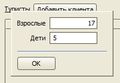

Изменения в версии 2.9.12
- Новые типы дополнительных свойств заявки
- Настройка показа дополнительных свойств заявки
- Ввод количества туристов
- Ввод причины отказа от тура при аннуляции заявки
- Множественный выбор в фильтрах журнала заявок
Новые типы дополнительных свойств заявки
Добавлены 3 новых типа дополнительных свойств:
1) Выбор из списка,
2) Редактируемый выбор из списка,
3) Флажок.
Настройка показа дополнительных свойств заявки
Для дополнительного свойства, привязанного к услуге, теперь можно выбрать ряд, в котором будет выводиться поле для ввода значения, если поля услуги выводятся в несколько рядов (Авиаперелет, Проживание, Автобус, Виза). Также для текстовых полей и выборов из списка можно растянуть поле ввода так, чтобы оно занимало всю доступную ширину, с помощью параметра "Растягивать по ширине".
Ввод количества туристов
В заявке теперь можно указать количество туристов, не заполняя список туристов.
При нажатии на заголовок списка туристов появляется форма, в которой можно ввести количество взрослых и детей.

Ввод причины отказа от тура при аннуляции заявки
При аннуляции заявки показывается форма, в которой можно указать причину отказа клиента от тура.
Множественный выбор в фильтрах журнала заявок
В фильтрах журнала заявки появился режим, в котором возможен выбор нескольких значений из списка. Например, нескольких стран.
Остались вопросы? Напишите нам на e-mail